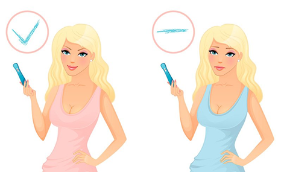

3 неделя беременности
На 3 неделе можно действительно говорить о беременности: с этого момента начинается 1 неделя эмбрионального срока.
На 3 неделе решается вопрос: быть ли беременности?
На 3 неделе будущей беременности во время полового акта во влагалище женщины извергается около 400 млн. сперматозоидов, с этого момента между ними начинается жестокая конкуренция за право оплодотворить яйцеклетку.
Сперматозоиды активно двигаются по родовым путям женщины до маточных труб, где и произойдет слияние сперматозоида и яйцеклетки. После того, как сперматозоид попадает в яйцеклетку он передаст либо женскую X-, либо мужскую Y-хромосому. С этого момента яйцеклетка называется зиготой, и она начинает двигаться по маточной трубе далее в полость матки, попутно зигота развивается и появляется морула. Морула – это всего лишь 32 клетки вашего будущего ребенка, но они пока активно развиваются, и к концу 3 недели беременности ваш ребенок будет похож на шарик диаметром всего 0,2 мм с числом клеток равным 250 (медики назовут вашего ребенка бластоцистой). В это время эндометрий матки уже подготовился к принятию вашего ребенка и тут начинает происходить физическое слияние мамы и будущего ребенка – происходит имплантация.
После имплантации питание будущего малыша начинает выполнять ваш организм. На 3 неделе беременности формируется также плацента, которая будет питать вашего ребенка, фильтровать кровь, выводить продукты жизнедеятельности вашего малыша, а также синтезировать необходимые гормоны.
Внутриутробное развитие плода на 3 неделе беременности
ВАШ ОРГАНИЗМ
У вас могут появиться тянущие боли внизу живота, не бойтесь – это идет процесс имплантации.
После наступления имплантации в вашем организме начинается выработка ХГЧ (хорионического гонадотропина человека). Это тот гормон, который определяется в вашей крови и моче и служит признаком беременности. У некоторых женщин могут быть микро-кровотечения – тоже результат имплантации.
На этой стадии возможны ранние признаки беременности, такие как болезненность в груди и утомляемость.
Если вам кажется, что ваш партнер все делает не так на этой неделе, а после еды вы чувствуете себя хуже, чем обычно, дело может быть в испытываемой по утрам тошноте и перепадах настроения (у вас). Более частое мочеиспускание также является ранним признаком беременности, которое останется с вами до самых родов.
УЗИ на 3 неделе беременности
ЗДОРОВЫЕ СОВЕТЫ
Если вы регулярно занимаетесь каким-либо видом спорта, ваше новое положение не должно быть в этом помехой, однако чрезвычайно интенсивные занятия могут быть противопоказаны.
Сауны и горячие ванны во время беременности также следует исключить. Ваш рацион должен содержать большое количество здоровой пищи. Теперь цель еды для вас – снабжать питательными веществами (не калориями) и себя, и ребенка. Все, что поступит в ваш организм, попадет и в растущее в вас дитя.
Возможные проблемы
Следует отметить, что могут возникнуть определенные проблемы с имплантацией плодного яйца, если будущая мамочка болела хроническими воспалительными гинекологическими заболеваниями. Воспалительные процессы в органах малого таза могут привести к спакайкам в фалопиевых трубах, тогда оплодотворенная яйцклетка не имеет возможности спуститься в полость матки и происходит внематочная беременность.
Признаками внематочной беременности могут быть мажущиеся кровянистые выделения, боли в животе, оттдающие в сторону где возможна трубная беременность. Сегодня несколько способов определения внематочной беременности, это и контроль уровня ХГЧ, ну и самый информативный способ иследования это УЗИ. К счастью медицина не стоит на месте, и если раньше при трубной беременности удаляли трубу, сейчас операцию делают методом лапароскопии, что позволяет сохранить трубу.
Воспалительные процессы в полости матки такие как эндометрит могут стать причиной больших проблем, начиная от препятствования имплантации плодного яйца, до отторжения уже внедрившегося эмбриона. Поэтому крайне важно пролечить все свои хронические заболевания.
Экстракорпоральное оплодотворение (ЭКО)
Во всем мире метод ЭКО рассматривается как основной способ лечения бесплодия. Кроме того, ЭКО – зачастую единственный выход для семей, в которых болен мужчина.
Экстракорпоральное оплодотворение – сравнительно молодой метод лечения бесплодия. Впервые он был применён в Англии в 1978 году. Однако еще 200 лет назад предпринимались подобные попытки.
Суть ЭКО (экстракорпорального оплодотворения) : сперматозоиды встречаются с яйцеклетками в пробирке, а затем их подсаживают в матку бесплодной женщины или суррогатной матери. При благоприятном исходе процедуры (наступлении беременности) часты случаи, когда оплодотворение из пробирки приводит к многоплодной беременности: зачинается двойня или тройня, т.к. в попытке экстракорпорального оплодотворения принимают участие несколько яйцеклеток. По желанию женщины может производиться редукция (изъятие лишних зародышей), но бывает, что это приводит к гибели оставшихся и к последующему выкидышу.
Когда применяется ЭКО?
ЭКО содействие эффективно при тех формах бесплодия, когда устранить причину, препятствующую зачатию не удается. Например, после внематочных беременностей, когда удалены одна или обе маточные трубы; после воспалительных заболеваний, когда проходимость маточных труб нарушена и восстановить её не представляется возможным.
В случаях, когда спермы недостаточно или когда в ней мало сперматозоидов врачами-андрологами разработаны способы получения спермы искусственным путём с помощью пункции или операции. При мужском факторе бесплодия не требуется обязательно выполнять зачатие с помощью ЭКО, можно просто ввести полученную искусственным путём сперму в полость матки. Однако, учитывая, что такой способ получения сперматозоидов сложен, в данном случае использование процедуры ЭКО дает больше шансов на успех.
Беременность
Беременность при ЭКО наступает в 30-35% случаев. Из 20 наступивших беременностей родами заканчиваются в среднем 18. После введения эмбрионов один раз в три дня нужно контролировать уровень гормонов в крови. Через 12 дней выполняется тест на беременность.
Роды
Роды при беременности после ЭКО ничем не отличаются от обычных. В тех случаях, когда причина бесплодия — болезнь женщины, роды проводятся с учётом конкретной болезни. К способу оплодотворения это уже не имеет никакого отношения.
Дети
По мнению врачей, оплодотворение из пробирки никак не сказывается на будущем ребенке и он ничем не отличается от остальных детей, рожденных естественным путем. Тем не менее, есть мнение, что такие дети лучше учатся, но чаще болеют. Врачи считают, что это может быть связано с чрезмерной опекой желанного ребёнка.
2 неделя 4 неделя